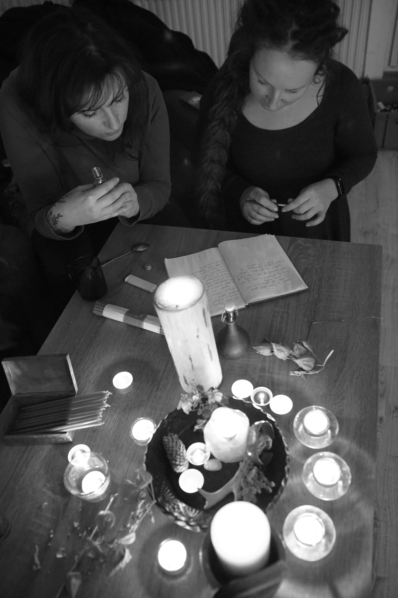
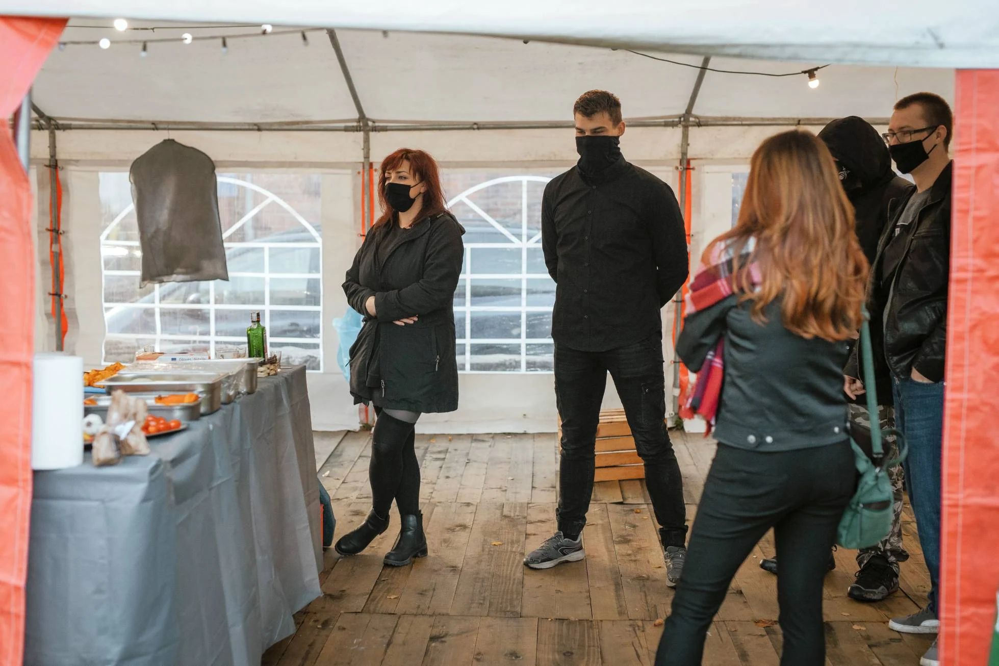
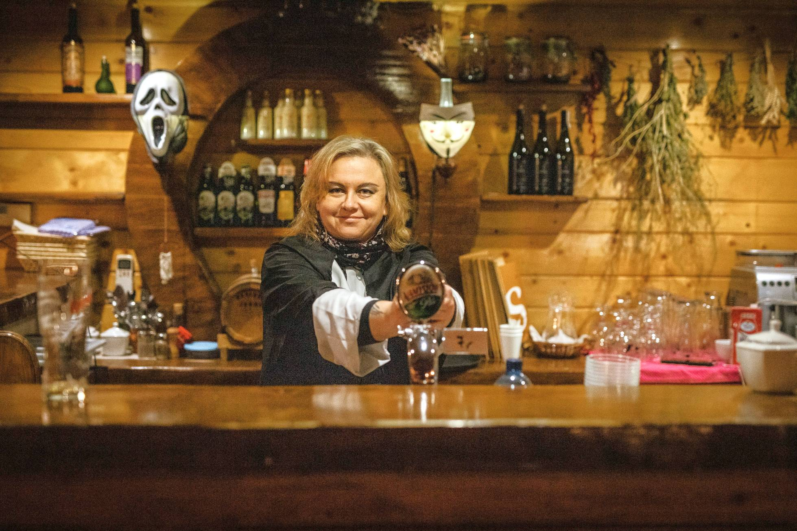
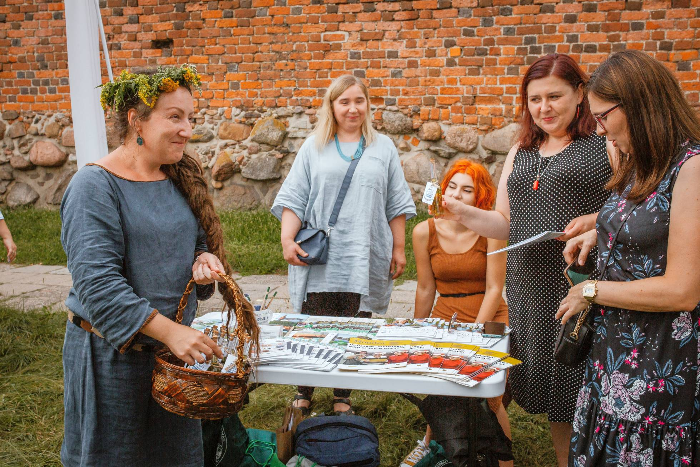
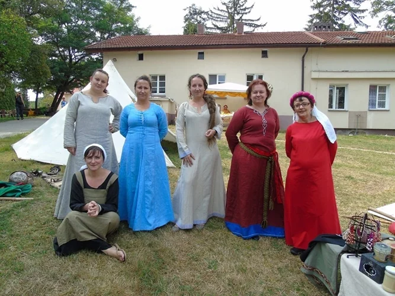
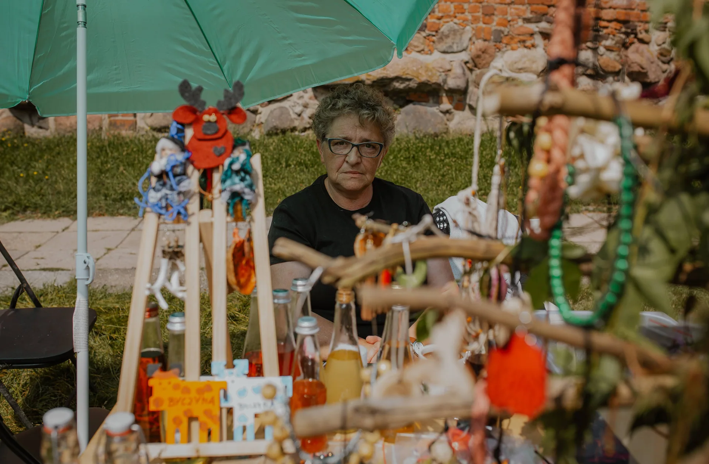
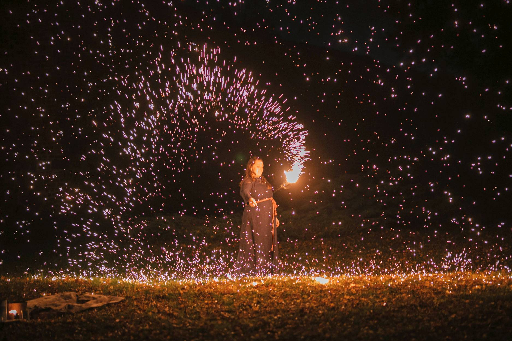
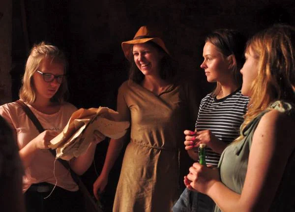
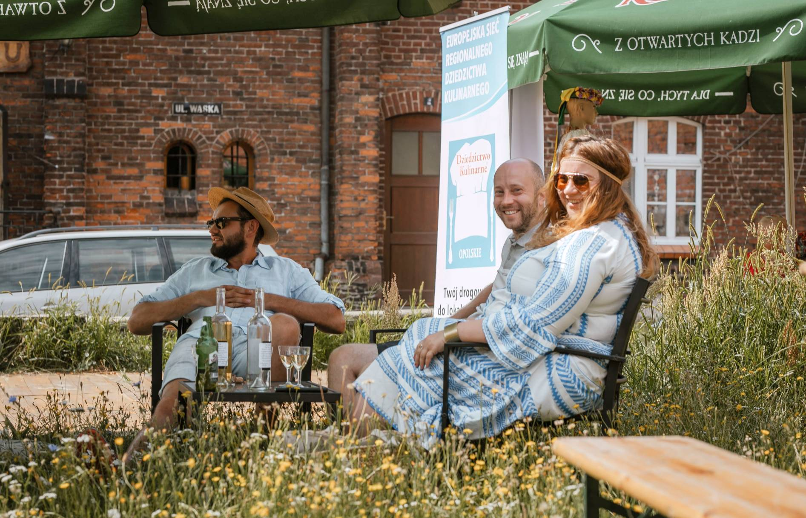

Nasz zespół tworzą ludzie zakochani w Byczynie - w jej klimacie, historii, kulturze.
Poprzez nasze usługi chcemy zapewnić Wam pakiet doświadczeń: rozrywkowych, edukacyjnych, wypoczynkowych, kulinarnych, emocjonalnych, rozwojowych i integrujących, zbudowanych na historii, folklorze i fantastyce.
W naszej ofercie znajdziecie eventy związane z Kołem Roku, wycieczki Szlakiem Czarownic, team building w realiach fantastyki historycznej.
Wszystko to oparte o naszą wiedzę, doświadczenie, umiejętności i osobowości.







